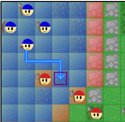
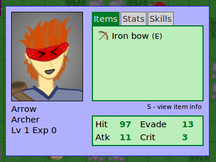
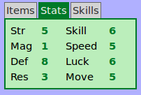
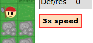

Table of Contents
First steps
- Use the arrow keys to move the cursor (the purple box).
- While the cursor is over one of your units (blue), press F to select the unit. Then move the cursor again to choose the unit's destination. Press F again to confirm the destination. Press D to deselect the unit. 
- Once you have chosen a destination, the action menu will appear. Use Up/Down and F to
choose an action, or press D to go back.

-
Possible actions are:
- Attack: Available when an enemy unit is in range.
- Skill: Use one of the unit's skills. Skills consume MP, but they have useful special effects. See the Skills section for more information.
- Trade: If you move next to one of your teammates, you can trade items between the two units.
- Items: Opens the Items Menu. From this menu, you can equip weapons or discard items you don't want.
- Wait: Don't do anything. Ends this unit's turn.
Combat
After choosing "Attack" from the Action Menu and choosing a weapon, moving the cursor over an enemy will show the Battle Stats Panel:
Here's what the Battle Stats Panel tells you:
- Weapon triangle: Swords beat axes, axes beats lances, and lances beat swords. A green up-arrow indicates that the unit has an advantage, while a red down-arrow indicates that the unit is at a disadvantage.
- HP: The unit's current HP.
- HIT: The percentage chance that the attack will hit.
- DMG: The amount of damage the attack will do if it hits. If there is a ×2, then the unit will attack twice.
- CRIT: The percentage chance of a critical hit. Critical hits do three times as much damage!
Skills
- Choose "Skill" from the Action Menu to view the selected unit's skills. Then choose a skill and a unit to use it on.
(Note: healing skills cannot be used on units that have full HP.)

- Using skills requires MP. Each time a unit lands a non-skill attack, 1 MP is restored.
- All units have the Defend skill, but other than that, most skills are unique.
- Upon levelling up, a unit may learn a new skill.
- Skills have types. Physical skills (sword, axe, lance, and bow) use the unit's Strength stat. The weapon triangle applies to skills too! Magic skills (holy and dark) use the unit's Magic stat. As with normal combat, holy magic has an advantage over dark magic.
- Some skills grant stat buffs or status conditions. Units with status conditions or stat changes
are marked with an orange circle. The status conditions and stat changes are shown in the Unit Info
Box.

The Unit Info Window
Press S while the cursor is over a unit to view the Unit Info Window. Use Left/Right to change tabs. Explanation of stats
You can view a unit's stats from the Stats tab of the Unit Info Window:  Here are general explanations of what each stat does:- Strength: Determines the power of physical attacks and skills.
- Magic: Determines the power of magical attacks and skills.
- Defence: Defence against physical attacks.
- Resistance: Like defence, except for magical attacks.
- Skill: The unit's fighting skill. Contributes to accuracy and critical hit rates.
- Speed: How fast the unit is. Contributes to accuracy and evade. Units that are markedly faster than their opponent get to attack twice.
- Luck: How lucky the unit is. Plays a small role in various formulas.
- Move: How many squares the unit can move.
Weapons and skills also have stats. You can view the stats of weapons from either the Weapon Menu or the Items tab of the Unit Info Window. Likewise, you can view the stats of skills from either the Skill Selection Box, or the Skills tab of the Unit Info Window.

- Hit: How accurate the weapon or skill is.
- Might (MT): How powerful the weapon or skill is.
- Crit: The bonus to the unit's critical hit rate.
- Weight: How heavy the weapon or skill is. A unit may be able to attack twice with a light weapon, but not with a heavy one.
- Range: The range at which you can use the weapon or skill. Bows have a range of 2, which means you can't use them on an enemy you are right next to.
Other useful controls
- Press E to open the End Turn menu. Press F to end your turn, or D to go back.

- Press F while the cursor is over an enemy unit to view that unit's attack and
movement ranges. Press D to go back.

- If you're impatient like me, press V to play the game at 3x speed. Pressing V again will put the game back at normal speed. 
- V can also be used to skip through the text and scenes that occur before and after chapters.